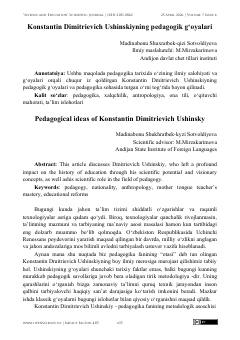

KDKonstantin Ushinskiyning pedagogik qarashlari va ularning zamonaviy ta'limdagi o‘rni tahlili.
Ushbu maqola pedagogika fanining asoschilaridan biri Konstantin Dmitrievich Ushinskiyning ilmiy merosi va uning zamonaviy ta'lim tizimidagi ahamiyatini tahlil qiladi. Muallif olimning xalqchillik, ona tili va pedagogik antropologiya borasidagi g‘oyalarini O‘zbekistondagi bugungi ta'lim islohotlari bilan qiyosiy o‘rganadi.